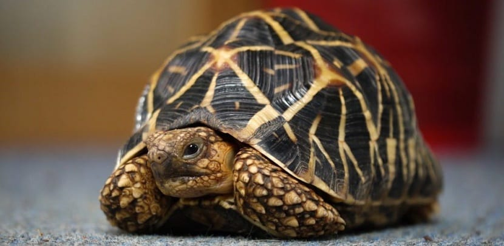
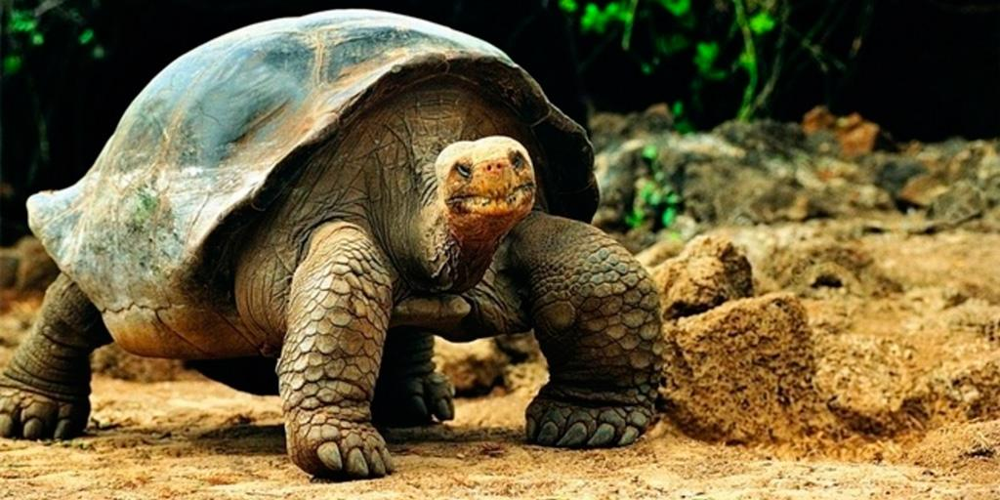
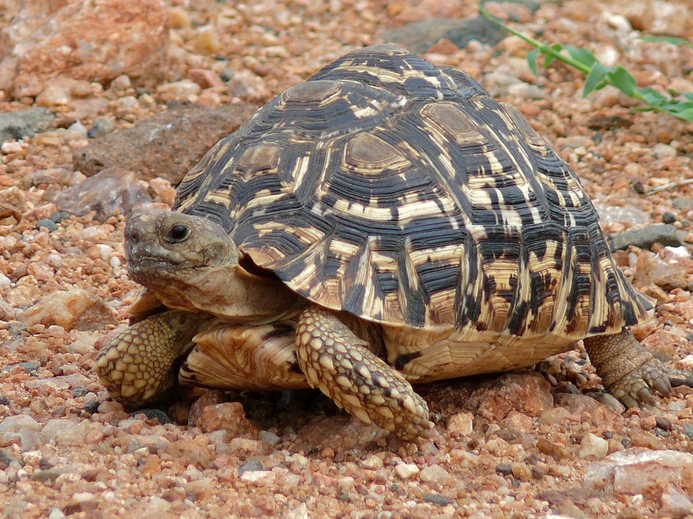

Inicio
Gatos
Perros
Tortugas
Cuenta
Maravillas Tranquilas: Una Galería de Fotografías de Tortugas Fascinantes
Turtugas de Agua
Tortugas de Tierra
Tortuga Estrellada

Tortuga de Galápagos

Tortuga Leopardo
